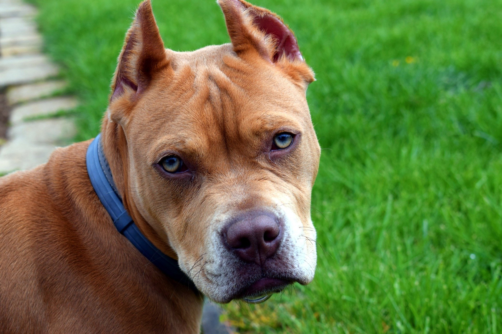

Certificado para tenencia de perros potencialmente peligrosos
Reconocimiento médico-psicológico conforme al Real Decreto 287/2002 para obtener o renovar la licencia administrativa de tenencia de perros potencialmente peligrosos (PPP) en tu ayuntamiento.

Razas consideradas potencialmente peligrosas
Según el RD 287/2002 y el anexo II, se consideran PPP las siguientes razas y sus cruces:
- Pit Bull Terrier
- Staffordshire Bull Terrier
- American Staffordshire Terrier
- Rottweiler
- Dogo Argentino
- Fila Brasileiro
- Tosa Inu
- Akita Inu
Algunos municipios incluyen razas adicionales — consulta la ordenanza municipal de tu ayuntamiento.
¿Qué evaluamos?
- Capacidad visual y auditiva.
- Pruebas psicotécnicas: control emocional, equilibrio psíquico, autocontrol.
- Capacidad locomotora y sistema cardiovascular.
- Cuestionario clínico y antecedentes.
Requisitos legales para la licencia
Además del certificado médico-psicológico, tu ayuntamiento te exigirá:
- Ser mayor de edad.
- No tener antecedentes penales por delitos relacionados.
- Seguro de responsabilidad civil con cobertura mínima legal.
- Identificación censal del animal y microchip.
Validez del certificado
El certificado tiene una validez de 1 año desde su emisión a efectos de presentación ante la administración municipal.
Preguntas frecuentes
¿Vale para todos los municipios?
Sí, es el certificado oficial regulado por el RD 287/2002 y reconocido en todo el territorio nacional.
¿Hay que renovarlo cada año?
El certificado tiene 1 año de vigencia. La licencia municipal suele renovarse cada 5 años, aportando el certificado vigente.
¿Y si el perro es un cruce?
El RD 287/2002 incluye también los cruces con las razas listadas. Tu veterinario o ayuntamiento puede confirmarte si tu perro está catalogado como PPP.